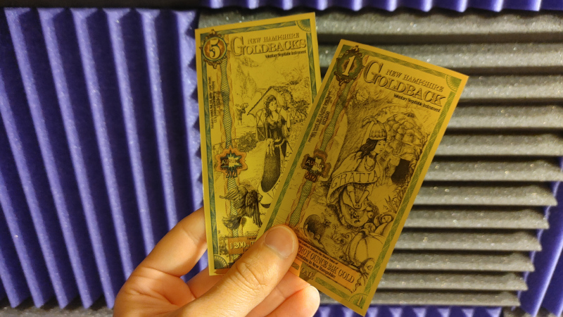
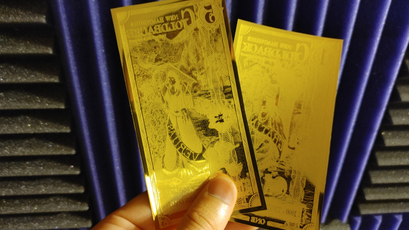

$ BaronBurdock
2022 08 15: Goldbacks
 I’ve wanted to make the trek to the Porcupine Freedom Festival (Porcfest) for years now, and every year it seems to escape me. While spending another year living variously through everyone's social media posts, I found that several attendees were using Goldbacks to purchase things from vendors (I loved the “Dirty fiat grudgingly accepted stickers”). I believe this marks the second or third year that Goldback has made an appearance at Porcfest. Where I've never looked into Goldbacks before, I decided to purchase some notes and give my thoughts.
A note on the word “note”: throughout this post I will continually refer to the Goldback as a “note.” This this isn’t a correct use of the term, as “note” implies an instrument of debt. That said, I really I don’t have a better term to use right now, so please roll with the punches.
What is a Goldback?
In many ways, the Goldback is like some lost evolutionary branch in gold-based money. Precious metals were used as money for thousands of years but due to the difficulty of storing and transporting gold, paper money was born. Initially paper money was issued by private banks who would issue receipts for their depositor’s gold and these notes were then traded to avoid the need to physically exchange gold. As central banks became prevalent, fiat money was born. Fiat is a government-issued currency that is not backed by a physical commodity, such as gold, but rather by faith in the government (or force of the government) that issued it. Goldbacks are an attempt reset the that progression (or regression) and are essentially midpoint between gold coinage and notes. Like gold coins, the gold that "backs" the Goldback is physically present in the currency itself, but it is printed onto a something that is easily transportable and exchangeable like a note.
Much like the fiat currencies that we are familiar with, Goldbacks come in different denominations to make transactions of varying value possible. Goldbacks come in 5 denominations: One, Five, Ten, Twenty-Five, and Fifty. Each note contains a different amount of gold expressed as a fraction of a troy ounce: 1/1000th, 1/200th, 1/100th, 1/40th, and 1/20th troy ounces of 24K gold respectively. Because each note is backed by gold, the value of a Goldback essentially has a floor based on the value of gold it contains. At the time of writing an ounce of gold is valued at $1,707 dollars. Therefore, one Goldback theoretically worth no less than $1.71. On Goldback’s website, an exchange rate is provided showing the market rate for a single Goldback. Currently the recommended exchange rate for a Goldback is $3.77. The value listed represents an average rate for a single Goldback from various resellers and distributors of Goldbacks. Its important to note that Goldbacks regularly trade above the spot price for gold. One would expect such a small amount of gold (possibly the smallest yet in a bullion product) to have significant production costs versus the gold it contains, but the Goldback folks also point out that there is increased value due to the utility of the product. I can’t easily spend a 1 ounce Krugerrand, but I can easily transact with 1/1000th of an ounce to buy a coffee.
One of the first things you notice when handling a Goldback is how different it feels from the paper money that we are accustomed to in the US (our friends to the north should feel right at home however, as both the Goldback and Canadian Dollar are polymer based). While I am sitting at my desk writing this post, my computer is flanked with several anti-static bags for various computer parts – a Goldback feels exactly like that. The Goldback is created by printing a design on a sheet of polymer, adding a thin layer of atomized gold in a vacuum chamber, and sealing it with a second sheet of polymer. Unlike gold coins that needed to be of a certain size so that they would not be lost, the Goldback’s use of atomized gold allows it to be used in much smaller transactions. Each note appears to be fairly durable. Unlike a paper note, I don't think you can easily rip a gold back. I also don't think the two polymer sheets are a risk of separating. Althought it doesn't damage the Goldback, each note looks considerably worse after being folded or crumpled. A special Goldback wallet has been created so the notes lay flat and are not folded like in a traditional wallet, but I'm not sure how usable they are given the size.
The Goldback creators were very careful to avoid the pitfalls that ended the Liberty Dollar. Beyond the wording “Voluntary Negotiable Instrument” and “Privately Issued. Not US. Dollar Legal Tender” emblazoned on the front, it is easy to see that a Goldback doesn’t resemble any currency in circulation. No one would mistake a Goldback for something issued by the US Mint. Currently there are three states with their own Goldback series: Utah, Nevada and New Hampshire. While the values do not vary from state to state, the artwork on each note is unique. All Goldbacks feature a female on the front representing a cardinal virtue. Looking at the New Hampshire series, the notes are as follows:
- One - Gratia (Grace)
- Five - Veritas (Truth)
- Ten - Justitia (Justice)
- Twenty-Five - Fortitudine (Fortitude)
- Fifty - Liberty (Libertas)
Each Goldback denomination is a different size and the notes get progressively larger as the value of the note increases. To give a rough estimate, the Fifty Goldback is about 50% longer than the One Goldback and about 20% wider. Each Goldback is detailed with a different color to make it easier to identify. The One Goldback features a green border and the Five Goldback features a blue border for example. Each note contains special detailing to prevent counterfeiting as you would expect with a modern currency, but perhaps its most interesting anti-counterfeit feature is the negative image on the back. Each Goldback features hand-drawn artwork on the face and a negative image of that artwork on the reverse. As the gold is printed onto the polymer, it follows the outline of the image of the front so that the gold accumulates in areas where the ink is featured on the face. It’s difficult to describe but is something that is quickly apparent when handling the note.

My Thoughts:
Before I give my thoughts on the Goldback, I do want to point out that this post is written by someone who is more favorable to Bitcoin than precious metals. Unlike a lot of Bitcoin enthusiasts I don’t think there’s anything wrong with silver or gold – I do not think that precious metals are a “shit-coin” despite the number of times I see that phrase repeated (ad nauseum). Gold has a history that is unmatched as the basis of a currency, even when you take into consideration its habit of being debased and its tendency to centralize things. Gold is an infinitely better medium of exchange than any fiat currency out there - have a little respect for your elders.
Those kind, Peter Schiff-esque words aside, gold’s utility is still very limited in the modern age and that is apparent with the Goldback. As I have mentioned before, the One Goldback is possibly the smallest gold bullion product in history and smaller purchases still pose a problem. If was in Keene and found a coffee shop that was willing to accept the Goldback, that vendor would still need to make change in fiat if the coffee costs less than $3.77. This is something you can see when using the Goldback Transaction Calculator. Because you still need to deal with fiat for small amounts, its hard to argue that the Goldback is true a replacement for a fiat currency in the same way that Bitcoin is (Bitcoin is extremely divisible). If the Goldback company decided to address this by making smaller denominations, a 1/2 goldback or something to that effect, the spot premium would likely make it cost prohibitive. The One Goldback is reportedly produced at a loss in order to keep the baseline value of the Goldback as low as possible. Introducing a “Silverback” could potentially alleviate the problem, but same manufacturing costs working against the 1/2 Goldback would still play into things. Furthermore, you would be left with a currency comprised of two metals who's values often diverge from one another – the same issue that has plagued gold and silver currencies over the years.
I love the Goldback for what it is and what it attempts to do, but I am somewhat confused on who the intended user of the Goldback would be. Hardcore goldbugs are undoubtably are going to scoff at the 100% spot premium as they stockpile near-cost bullion. Present-day barterers are probably going to prefer using junk mercury dimes instead of switching to a new alternative (for the record, I’ve never understood the appeal of using mercury dimes). Any SHTF-barterers would probably be better served by buying more ammo, medicine or alcohol to trade with. To put it lightly, most cryptocurrency users view precious metals as antiquated – the idea taking a step back and physically exchanging a currency would be a non-starter. In the end you are left with a very small subset of libertarian-minded people who are not fully invested in a given cryptocurrency, who also like gold, and who like to barter - that’s a wild Venn diagram.
Even though the Goldback company is struggling to keep up with demand, and a fourth state is in the works, I still suspect that the number of people who actively use Goldbacks will be always be somewhat limited. Had the Goldback been created before online commerce took off it might have had an easier time with adoption. The uphill battle that the Goldback faces is that everyone living in the digital age has been conditioned to pay electronically in some manner. A whole new generation is being conditioned to pay via scanning QR codes - I bought a cup of coffee yesterday and paid via QR scanning. This trend will work against the Goldback and favor something like Bitcoin in the long run.
To close things out, if someone offered to pay me in Goldbacks I would gladly accept it. I find something appealing about the Goldback that I don’t find appealing in other gold products, namely its novelty and utility. I love the artwork on each Goldback and would love to have each state's variants. Even though I think the Goldback is an intersting idea, I question how much success it will have compared to other alternative currencies, specifically Bitcoin - Bitcoin is just too damn convenient. I do wish the Goldback folks luck with this endeavor and I hope I am wrong. Any means to siphon transactions from the fiat hellscape that we currently live in is welcomed by me.